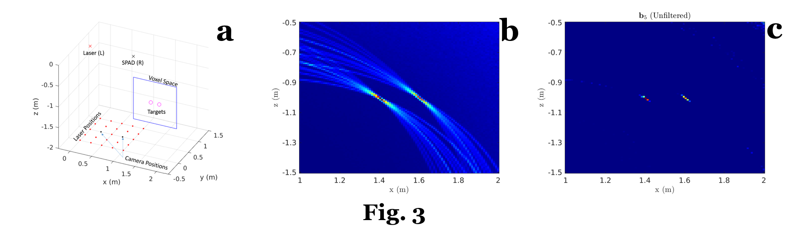

Fig. 1. Non-Line-of-Sight scenario.
Consider the scenario shown in Fig. 1, which comprises a laser, a camera, a relay wall and an object that is hidden behind an occluder. Since the target is not in the direct line-of-sight of the laser, the scenario is typically referred to as Non-Line-of-Sight (NLOS). A NLOS line of research rotates around the following question: "is it possible to reconstruct an image of the target hidden behind an occluder?
In 2012, Andreas Velten and his MIT colleagues addressed this question by exploiting the information encoded in the photons that have reflected multiple times. More specifically, using a laser that emits femtosecond (10^-15) long pulses at a MHz repetition rate and an ultra-fast camera capable of recording at a picosecond (10^-9) resolution, authors in [1] proposed a technique based on the backprojection algorithm. In Fig. 1, the laser is directed over a specific point on the wall, ‘p’, and the camera is focused on another point of the wall, ‘o’. If we assume that the surface of the wall is Lambertian, the photons are uniformly scattered over the entire volume; some photons travel to the target and a fraction of these photons travels back to the wall. The ones reaching the point ‘o’ are collected by the camera. The underlying assumption is that we are able to illuminate the wall using short pulses and have a camera fast enough to detect the time of flight of the photons, which in turn allows us to determine the distance travelled from ‘p’ to ‘o’.
The goal of proposed technique is to reconstruct the albedo of the scene by collecting data, which is a function of the laser position and camera position (on the wall) and time. This reconstruction is basically an inverse problem and the backprojection algorithm (typically exploited in Computational Tomography applications) provides a solution, albeit approximate and to unable of including priors. It is however robust, parallelizable and efficiently uses the available computational resources.
How does the backprojection algorithm work?
Consider the toy scenario shown in Fig. 2a, composed of an ultra-fast laser, an ultra-fast camera, a relay wall where we show 3 different laser positions (‘p’, ‘q’ and ‘r’), a camera position (‘o’) and a simple target, namely a small patch. Assume that the laser is directed over point ‘p’ and the camera captures the photons that arrive in point ‘o’, as explained above. From the dataset, however, we do not know which pulse came from which surface of the target object. We can say that the possible locations that have contributed to a given photon lie on ellipsoid whose foci are, in our example, ‘p’ and ‘o’. In Fig. 2b-2d, we show the ellipsoids for the considered laser points: the intersection corresponds to the patch location on the reconstructed volume. Some useful references can be found in [1]-[2].
Can we improve these results?
We have studied an iterative algorithm, which we named “Error Backprojection” (in short, AEB), based on the Algebraic Reconstruction Techniques (ART). For simplicity, let us call the collected dataset as s1, and let b1 = B(s1), where B() is the backprojection function and b1 is the result of the backprojection. In words, the backprojection algorithm allows us to obtain a result in the “albedo space” (b1) from the “data space” (s1). Now, let us assume that we have a forward model of the scenario under investigation, namely a function -say F()- that creates a correspondence between the “albedo space” and the “dataset space”; mathematically, it can be defined as s2 = F(b1). Once s2 is obtained, we calculate b2 = b1 + α B(s1-s2), where (s1-s2) is the defined as the error in the dataset and b2 is the updated backprojection result, based on the aforementioned error (α is a step size parameter). This update is repeated until a stop criterion is reached.
In Fig. 3, we show some simulation results. In this toy example, we have two isotropic spheres (see the magenta circles in Fig. 3a) that are not on the direct line-of-sight of either the laser, L, or the camera, R. Considering a reconstruction space indicated by the blue lines in Fig. 3a, we show the non-iterative result in Fig. 3b, whereas the AEB result (after 5 iterations) is in Fig. 3c. It is possible to see that the AEB improved over the non-iterative result, as the recovered area of each sphere is smaller that is non-iterative counterpart. For a more detailed explanation, refer to [3].
What's next?
We are currently looking into extending our algorithm to five and higher-bounce paths, from a theoretical, simulation and experimental point of view.
References:
[1] A. Velten, et al., "Recovering three-dimensional shape around a corner using ultrafast time-of-flight imaging", Nature Communications, 3:745 doi: 10.1038/ncomms1747, 2012.
[2] M. Buttafava, et al., "Non-line-of-sight imaging using a time-gated single photon avalanche diode", Optics Express, vol. 23, no. 16, Aug. 2015.
[3] M. La Manna, et al. "Error Backprojection Algorithms for Non-Line-of-Sight Imaging", (Early Access), IEEE Transactions on Pattern Analysis and Machine Intelligence, Jun. 2018.